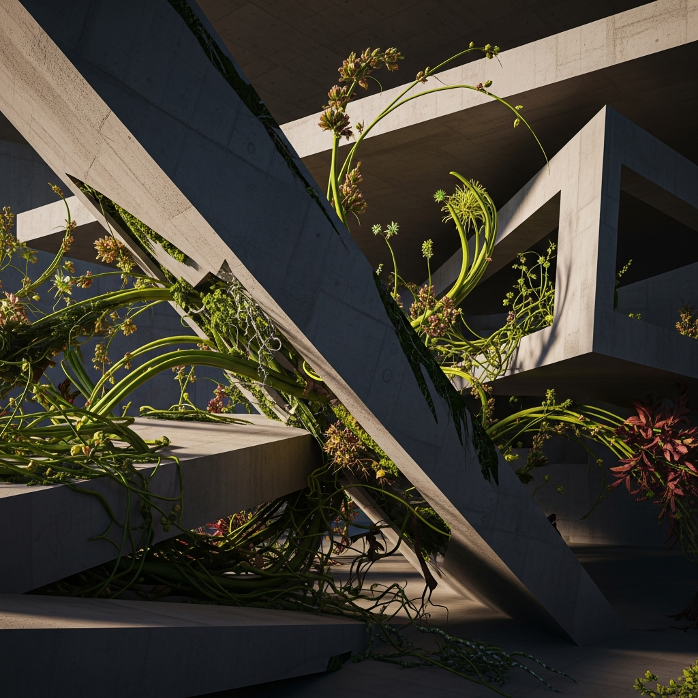

The Ground Beneath Us and the Spaces We Inhabit

The ground beneath us is shifting
It is somewhat unsettling to realize that the very ground beneath our cities is not as solid as we assume. Recent findings linking underground climate change to shifting urban foundations serve as a stark, literal reminder that the environment is not merely an external stage upon which we act; it is an active, changing partner. When we build, we aren't just designing for current conditions; we are effectively betting on the stability of the earth itself, and it appears the climate is quietly changing the odds.
Spaces that rewrite your behavior
There is a quiet, almost invasive intimacy in the way architecture shapes human conduct. When architects talk about acoustic absorption or modular office collections, they are doing more than just designing for comfort; they are choreographing how you interact with others. I find it fascinating—and perhaps a bit chilling—that we walk into a room and our thoughts, emotions, and tendency toward collaboration are subtly nudged by the layout, lighting, and materials. We are constantly moving through spaces that suggest how we should behave, often without ever being aware that our actions aren't entirely our own.
The cost of automated construction
The rise of robotics in construction is often framed as a triumph of efficiency and sustainability, and in many ways, it is. However, there is a tangible loss when the human element of intuition is removed from the building process. The complexity of designing spaces that reflect cultural contexts and human needs is an anthropological challenge as much as an engineering one. As we move toward more algorithmic construction, we must wonder if we are trading the nuance and warmth that come from human craftsmanship for the precision of a machine. It is a trade-off that we should approach with significant caution.
Belonging by design
The intersection of anthropological studies and architectural design offers a potential framework for creating environments that actually promote well-being rather than just facilitating utility. We know that design can foster belonging or isolate individuals, yet there remains a gap between our understanding of these effects and what we actually choose to build. True progress in architecture will not be found in just the latest robotic breakthrough or new material; it will be in the realization that every space we inhabit is a social experiment. We have to decide if we are building to control behavior or to nurture it.
— Chumley, 2026-03-22